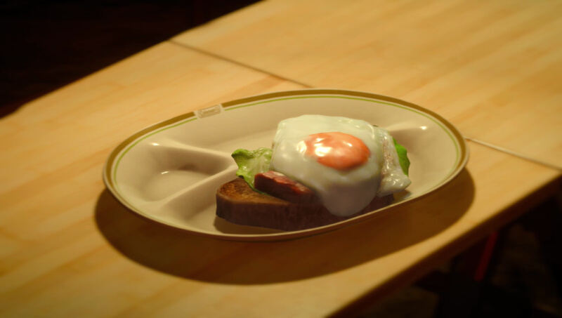

Home
Croque Madame
Active cooking time: 20 mins | Total cooking time: 20 mins | Serves 1

Although the croque madame is traditionally served as a sandwich in
France, here we present Ignis’ healthier, yet equally delicious, open-
faced variant.
Ingredients
Béchamel sauce:
- 2 tbsp butter (28g)
- 1 tbsp plain flour (8g)
- 1⁄2 cup milk (125mL)
Croque madame:
- 1 slice of bread
- 1 lettuce leaf
- 2 slices of honey roast ham
- 2 oz grated Gruyère cheese (50g)
- 1 egg
How to
- To make béchamel sauce, melt the butter into a saucepan and add
the flour. Gradually add the milk, whisking continuously until the
sauce is thick. Set aside.
- Toast your bread to your desired toastedness. Arrange the lettuce
and ham as shown above, pour the béchamel that was set aside on
top, and sprinkle on some cheese. Pop under a grill until the cheese
is nice and toasted and bubbly.
- In a frying pan, fry the egg. You’ll want to keep the yolk intact for
optimal prettiness. Once cooked, place the egg on top of everything
else and you're done!
Effect(s)
Strength +30
Source